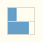
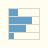

qni-webgpu · design discussion
現状の Chance display プレビュー (パレット 32×32 px) は横バー 2 本
だが、これだとヒストグラムらしさが弱い。4 本以上にして
「複数結果の確率分布」のニュアンスを出す案を 4 通りモックで比較する。
実コードは apps/egui-web/src/icons/gate_body.rs::draw_chance_preview_body。
パレットの 2 行目末尾に置かれることを想定し、隣にダミーのユニタリゲート 2 つ + 余白 + 各案のアイコンを並べた帯状コンテナで実寸の見え方を確認する。
左から: 現状 / 案 1 / 案 2 / 案 3 / 案 4。
Playwright でパレット上の Chance display を 48×48 px に切り出した比較。After が採用案。


実寸 32×32 px で見ると、4 行案 (1–3) はどれも「複数結果のヒストグラム」 として読めるようになり、現状の 2 行版より Chance gate の役割を表現できる。 8 行案 (案 4) は行高 4 px なのでバーの長短差は読めるが、個々の行が 分離して見えにくく「グレー帯」っぽくなる傾向。
分布パターンの好み:
個人推奨は案 1 (Gaussian 4 行)。Chance gate のシンボルとして最も 「確率分布」を素直に表せる。次点は案 2。